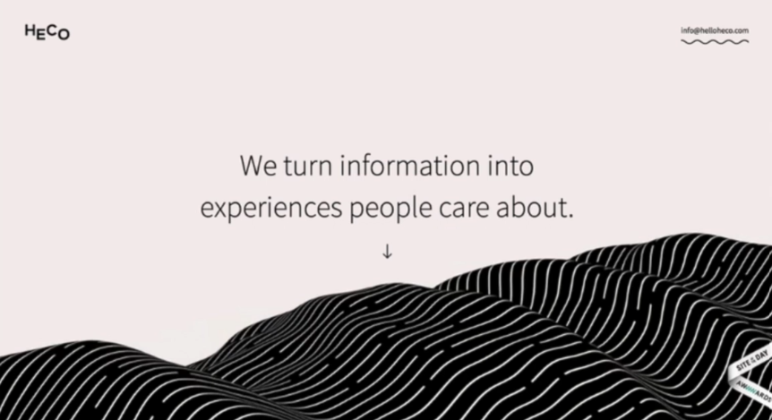
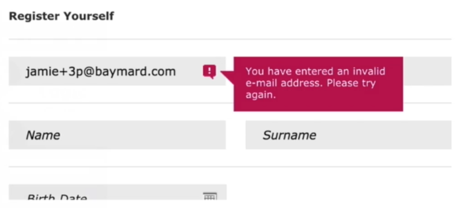

Jump to a section
32 · Three Essential Functions of Contrast in UI Design
Refined 15 October 2026 from the supplied Joe Natoli course notes. Original wording and captures remain preserved.
Core principle
Contrast can direct attention, differentiate related elements and communicate hierarchy.
Application to game tools
Use these as three critique questions for the same tool, rather than three disconnected decoration rules.
Assessment and qualification
“Contrast always wins” is a memorable course mantra, not an empirical universal law.
Try it
Where should the strongest emphasis move when the tool changes state?
Source: 32 Three Essential Functions of Contrast in UI Design.md
Study detail and teaching translation
Use contrast to direct attention toward the next decision, distinguish elements with different roles, and communicate an order of importance.
These functions can conflict. For example, a strongly tinted status panel may compete with the action it is intended to explain.
Teaching adaptation: ask what should dominate in the starting, warning, ready and completed states. One fixed prominent button is not necessarily the right hierarchy for every state.
Original captures

